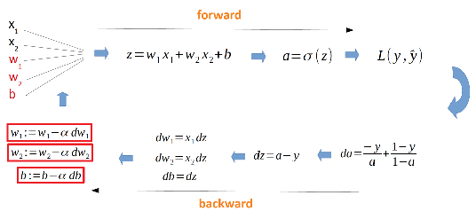
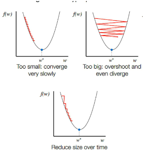

Part I: Neural Networks and Deep Learning
1.1 Logistic Regression
-
Linear Classifier: Logistic Regression is considered a linear classifier because it relies on a linear discriminant function to partition the feature space (i.e., separate classes using a straight line or hyperplane).
-
Regression vs Classification: The problem determines the goal:
-
Regression problems aim to predict a real output value (e.g., housing cost), typically finding a linear model \(\hat{y}=wx+b\).
-
Classification problems aim for a categorical answer (e.g., cat or dog). Logistic Regression calculates the conditional probability \(\hat{Y} = P(y=1|x)\), which must fall between 0 and 1. It typically uses the Cross Entropy / Log Loss function to calculate the cost.
-
Forward Pass and Backward Pass:
-
Forward Pass: The input vector \(X\) propagates forward to calculate the weighted sum \(z = W^T X + b\), and then the predictor \(\hat{Y} = \sigma(z)\) is calculated by applying the sigmoid function.
-
Backward Pass: This uses the chain rule to calculate the derivatives (gradients), such as \(dz=a-y\), which determine how much each weight and bias contributed to the final error. These gradients are used to update the parameters.

-
Learning Rate (\(\alpha\)): This is a hyperparameter that controls the size of the step taken in each iteration during gradient descent. A low value risks stagnation, while a high value risks oscillations or divergence (no learning).

-
Bias (\(w_0\)): The bias is an essential parameter, often viewed as another weight connected to an input that is constantly "on" (value of 1). The function of the bias is to allow shifting the entire activation curve of the neuron, adjusting the decision threshold regardless of the input features.
1.2 Multilayer Perceptrons (MLP)
-
Architecture: MLPs use a fully connected feedforward architecture, meaning every node is connected to every node in adjacent layers.
-
Hyperparameters: These variables must be set before training begins and determine the network's structure, including the number of layers, the number of nodes in the hidden layers, and the activation functions.
-
Universal Approximation Theory: This theorem states that a feed-forward network with even a single hidden layer containing a finite number of neurons can approximate any continuous function.
-
Activation Functions: These must be continuous and differentiable for backpropagation to work. They should be monotonic (entirely non-increasing or non-decreasing) because non-monotonicity would lead to chaotic behaviour during training, as increasing a weight might paradoxically cause the neuron to have less influence.
-
Sigmoid/Tanh: These are sigmoidal (S-shaped) and commonly used. Tanh has a derivative that is generally larger than sigmoid's, leading to faster training.
-
Linear Activation: If a network uses linear activation functions in all hidden layers, the network can be reduced to a single-layer ANN, restricting the model to only linear functions.
-
Vanishing Gradient Problem: This occurs primarily with sigmoid/tanh in deep neural networks. The error signal is multiplied by the small derivative of the activation function at each step, causing the update gradient for the "front" layers to decrease exponentially. This dramatically slows down the learning process for those layers.
-
Bias in MLP: The bias allows shifting the entire activation curve, which is essential for adjusting the decision boundary. Unlike weights, the bias has no problems of symmetry and can safely be initialised to zero, though large initial values should be avoided due to the risk of vanishing gradients.
1.3 Backpropagation (BP)
-
BP Procedure: An optimisation method based on gradient descent. It involves: Forward propagation (calculating the predictor \(\hat{Y}\)), computing the loss, Back propagation (computing derivatives), and updating learning rules.
-
Random Initialisation: Weights must be randomly initialised to prevent symmetry, otherwise, all hidden units would compute the same function and receive identical updates.
-
Learning Rate: As noted above, the learning rate \(\alpha\) determines the step size and must be carefully tuned to avoid stagnation or divergence.
-
Real Example of BP: The process involves calculating the local gradient (\(\delta\)) for each neuron (starting at the output) and using the learning rule \(w_{new} = w_{old} - \alpha \cdot \delta \cdot a\) to adjust weights and biases.
- \(\alpha\) (alpha): The learning rate
- \(\delta\) (delta): The local gradient for the neuron.
- \(a\): The activation (output value) of the neuron in the previous layer (the neuron that feeds into the current weight).
1.4 Convolutional Neural Networks (CNN)
-
Convolution Operation: This is the core mechanism where a filter (or kernel) is slid over the input (e.g., image) to produce a feature map. The filter performs a matrix multiplication (and summation) at every location. CNNs are superior because they learn these filters directly from the data. For colour images, the filter size must match the number of input channels (e.g., a \(3 \times 3\) filter on an RGB image is \(3 \times 3 \times 3\)).
-
Pooling (Max-Pooling): Pooling layers reduce the feature map size by combining features into higher-level representations. Max-pooling achieves this by taking the maximum value within a sliding window. This non-overlapping subsampling grants higher-layer representations translational invariance (recognising a pattern regardless of its exact location) and reduces computational cost.
-
Hyperparameters: Key architectural choices include the number of features/filters, the size of the features (kernel dimension), the window size and stride for pooling, and the overall architecture (order of layers).
-
ReLU Activation Function: Rectified Linear Units (ReLU) are typically applied after convolution. They introduce non-linearity by changing all negative values to zero.
-
Backpropagation: Like MLPs, CNNs are trained using Backpropagation to adjust both the features in the convolutional layers (the filters) and the voting weights in the fully connected layers.
1.5 Deep Learning: Others
-
Deep Learning Architectures: Deep learning is not all about deep neural networks. Alternative architectures have been proposed, such as Deep Forest and Deep SVMs.
-
Unsupervised Learning: Deep Learning can achieve unsupervised tasks. A primary example is the Deep Autoencoder.
-
Deep Autoencoder: This is an unsupervised deterministic mapping algorithm that applies backpropagation. It learns an approximation to the identity function by minimising the reconstruction error between the input and the output. The goal is to force the model to learn the most robust features by reducing dimensionality.
-
Limitations: Deep Learning is particularly good at solving pattern recognition problems.